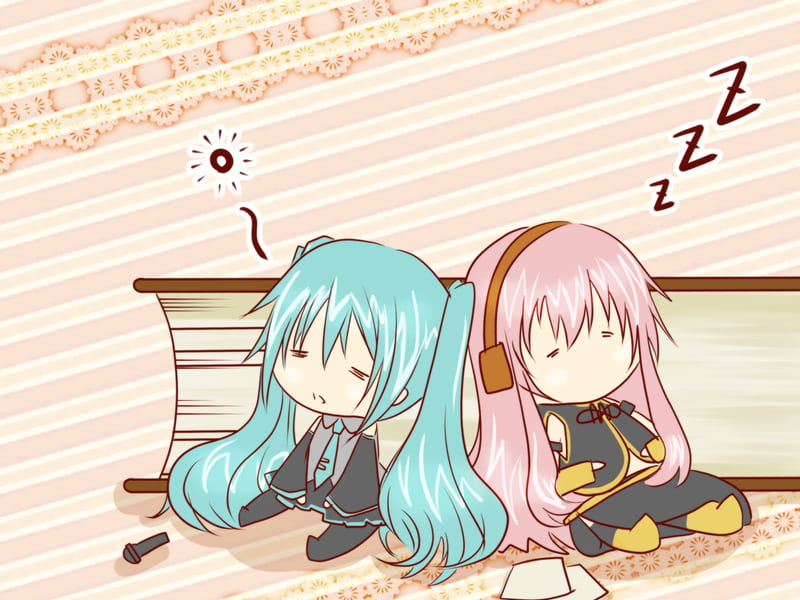

Tentang NauSynthara

Visi Kami
NauSynthara adalah tempat di mana musik dan teknologi bertemu. Kami bikin platform ini buat memudahkan kamu menemukan musik yang bikin hati bergetar. Dari rilisan terbaru sampai pengalaman musik yang seru, kami punya semuanya di sini.
Apa yang Kami Tawarkan
Di NauSynthara, kamu bisa nemuin berbagai macam fitur yang bikin pengalaman musik kamu jadi makin seru. Ada rilisan eksklusif dari artis favoritmu, konser virtual yang bikin kamu ngerasa di panggung, dan banyak lagi.